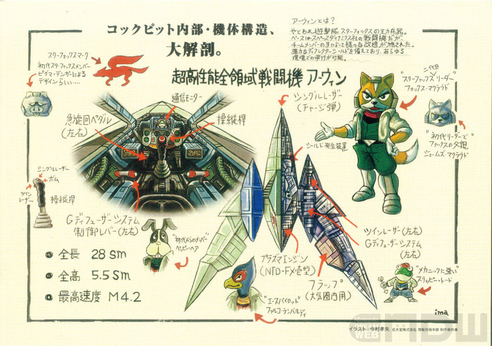

G・ディフューザーシステム G-DIFFUSER SYSTEM
技術 反重力発生・慣性制御機構 — 星系標準技術
機体にかかる重力と慣性を拡散する反重力機構。基礎理論は科学技術省長官時代のアンドルフ、実用化はスペース・ダイナミクス社の前身デ・ポン航宙機工房による。アーウィンから旅客船まで、ライラットの空を飛ぶほぼ全ての機体の心臓部であり、星系共通の航法基準でもある。
NO VISUAL
AWAITING SCAN
AWAITING SCAN
ライラット星系の軍事組織・部隊・機体・兵器・軍事施設に関する記録の総覧。サムネイル付きの項目は、選択すると個別の詳細記録へ接続される。歴史・文化・組織などの一般用語は用語データベースを参照。
機体にかかる重力と慣性を拡散する反重力機構。基礎理論は科学技術省長官時代のアンドルフ、実用化はスペース・ダイナミクス社の前身デ・ポン航宙機工房による。アーウィンから旅客船まで、ライラットの空を飛ぶほぼ全ての機体の心臓部であり、星系共通の航法基準でもある。
威力と範囲は極大ながら、敵味方識別IDの登録式で味方だけは巻き込まない「賢い」爆弾。連鎖反応防止のため9発以上は保持できない。旧式は「ノヴァボム」と呼ばれ、地方基地に在庫が残るのみである。
ブラグザライトを回収する超小型モジュールの群れ。エネルギー反応にリング状で集合し、潜った機体のシールドと損傷保護へ即座にエネルギーを回す。金色のリングほど回復量が高い。
独立星系連合（IGA）との戦役で劣勢を強いられていた共和国の戦況を変えた兵器の一つ。その原型は、アンドルフ・ボウマン博士が学生時代に理論を構築した人工知能プロトコル『ENIGMA』を核に持つ戦闘補助システムであり、機体に蓄積された過去の交戦データから最適な戦い方を導き出す、いわば万能の戦術AIである。導入後、操縦者は「死なない飛び方」に徹するだけで相応の戦果を挙げられるようになり、敵の撃墜数と兵士の生還率を劇的に底上げすることに成功した。
ただしこのシステムの特許は現在更新されておらず、様々なメーカーがこれを流用した補助AIをあらゆる機体に搭載している。その結果、AIの性能は敵味方で拮抗し、結局は操縦者の技術が問われる局面が増えているのが実情である。またAIの性能にかまけて戦闘訓練をおろそかにする隊員の存在は、共和国・帝国双方に共通する問題としてしばしば挙げられている。
その性質上、ポリヴィアス系のAIは星系のほぼ全ての戦闘機・艦船に搭載されており、ライラットの争いの歴史を最も多く「見てきた」存在ともいえる。なお、原型となった開発者の学生時代の自作ゲーム『アウト・オブ・ディメンション』と同様、この名もまた当時流行していたオカルト譚からの引用とされる。
Gディフューザーシステムを搭載したスターフォックスの主力戦闘機。全長28sm、最高速度M4.2。宇宙・大気圏・地表を問わず戦闘可能な全領域性能を持ち、「乗り手を選ぶ名機」としてライラットの空の代名詞となっている。

CDFの空を支える主力量産戦闘機。アーウィンの設計からGディフューザーを外し量産向けに簡略化した「誰もが乗れる翼」であり、星系のあらゆる基地と艦隊に配備される。標準武装はシングルレーザー1門で部隊ごとにツインレーザーやスマートボムラックへ換装される。ビル・グレイの専用改修機「ソニック・ポインター」もこの機体がベースである。
アーウィンの変形機構が展開する対地強襲用二足歩行形態。Gディフューザー出力を脚部へ転換し、対空砲火の網や施設内部・敵艦の艦内など「戦闘機が立ち入れない戦場」へ歩いて侵入する。火力は飛行形態と同等でホバリングも可能。全領域戦闘機の名を文字通り完成させた形態。
速さと火力を捨てる代わりに空中で静止し、係留ケーブルで小型ロボ「ダイレクト-アイ」を下ろして施設の管制系へ潜り込むスターフォックスの潜入支援機。ゾネス海上基地潜入作戦で誰にも気づかれずに物証を持ち帰り、「潜入は戦闘機の仕事ではない」を証明した。
Gディフューザー技術を地上に持ち込んだ「超高性能回転式地対空戦車」。ローリング回避とホバー滑走をこなす機動性で「地を這う航空戦」と評され、重力の強いマクベスのような戦域で翼の代わりを務める。駆動部を飛翔ユニットへ再構成する反重力飛翔形態「グラヴマスター」の換装計画が試験中とされる。
スリッピー・トードが設計した星系唯一の本格戦闘潜航艇。照明魚雷を兼ねる自動装填ランチャーを備え、アクアスの海中掃討作戦で巨大生体兵器バクーンを撃破した。宇宙から水中まで三領域対応の後継機「ブルフロッグ」が設計者の手で開発中とされる。
スリッピー・トードがブルーマリンの後継として開発中の全領域対応戦闘機。大気圏・宇宙・水中を持ち替えなしで戦う「絶対に落ちない機体」を掲げ、照準補正を捨てたプラズマ砲と三重の耐圧隔壁を軸に設計が進む。完成予定は「あと5分」。
スターフォックスの母艦を務める純白の空母兼宇宙戦艦。J・マクラウドが80標準年ローンで購入して以来、部隊の歴史と共に飛び続けている。艦の管理は艦載AIロボ「ナウス」が一手に担う。
スターウルフが駆る敵性の全領域戦闘機。性能値だけならアーウィンすら上回る星系最強の強襲戦闘機であり、その系譜にはピグマの裏切りで持ち去られたアーウィン3号機の影があるとされる。現行のウルフェンⅡはハンター形態へのシームレス変形機構を持ち、現存3機が確認されている。
ウルフェンの先行試作フレームを再生した重襲撃機。長距離追跡センサーとジャミング装置を備え、一度ロックした獲物を数百キロ先まで追い続ける。主にレオンとピグマが運用する。現行のウルフェンⅡでは本機の機能が変形形態として統合された。
フィチナの氷下海漁船を改造した武装潜水艦。レーザーを無効化する遮蔽バリアと採掘ドリルを備え、ゾネスの毒の海を荒らし回ったが、スターフォックスとの交戦で轟沈。現在は後継艦「イエロー・サルマリン」が活動中である。
レオンが個人で維持するワンオフ機。全兵装が照準に入った獲物へ自動で放たれるワイドロック式の追尾チャージ弾で構成され、光学擬態装甲により宇宙空間では機体の90%が背景に同化する。シールドは厚くブーストは短い。この機体の目撃報告は「レオンが本気になった」という報告と同義とされる。
スターウルフ臨時構成員パンサー・カルロッソの乗機。補助兵装を全廃し、一発の威力と射程に全てを振ったプリズム式重ザッパー一挺で戦う質実剛健の機体。ウルフェンⅡに似た輪郭を持つ出所不明のワンオフで、なぜか複座。本人曰く「運命の出会いは、いつでも突然だから」。
フリーの運び屋キャット・モンローの愛艇。環状線の興行レース艇を族のOBたちが「逃げ足」に全振りで改修したワンオフであり、武装は自衛用の軽ザッパー一挺のみ。CDFと帝国の双方に追跡記録があり、双方に成功例がない。
純白・無装飾の機体が星雲を切り裂いて飛ぶ姿はまさに「剣」。ツインレーザーと20基の遠隔操作ドローンにより単騎で1個小隊に匹敵する戦闘力を発揮するヴォーパル隊隊長の乗機。神経直結の操縦系は1出撃5分が限界とされ、隊の作戦はすべてこの5分からの逆算で組まれる。その操縦系には公にできない技術が使われているという。
ピグマ・デンガーが開発した局地襲撃兵器。外見はただの無人哨戒機にしか見えず、丸いフォルムに惚けた表情のペイントは可愛らしささえ覚えさせるが、騙されてはいけない。「デビル」の名を冠するにふさわしい凶悪な戦闘力を備えた襲撃ロボであり、その実力はグリッピアの鉱床防衛戦でスリッピー・トードを降参寸前まで追い込んだほどである。
無害そうな外見は、むろんただのフェイクである。その外周にはあらゆる兵器が隠されており、遠距離狙撃用のツインレーザーに始まり、機材を麻痺させる冷凍モジュール、壁を焼き切る超高出力バーナー、岩盤を圧壊させる衝撃波ビーコン、水さえあればどこでも使えるウォーターカッター、高速回転で竜巻を生み出す気象コントロールファンなど、7種類の兵装が用意されている。しかも、これらはあくまで「おまけ」である。本命は本体上部に格納された「ウィザードモジュール」であり、その空間転送技術で呼び出される大量の子機の前に、大抵の設備はイナゴに食い尽くされる畑のごとく崩壊する。
だが、本当に恐ろしいのはそれでもない。ウィザードモジュールは本命であると同時に、この機体の安全装置を兼ねているのである。これが破壊されたとき、マシンは真の姿へと変形する。小惑星破壊兵器「デビル・ジョーカー」である。小惑星を丸ごと吹き飛ばす巨大レーザー砲「デビル・デスキャノン」は名前どおりの破壊力を持ち、恒星間プラズマを風のように受けて羽ばたき旋回する俊敏な機動もまた凶悪と評するほかない。プロテカムを子機で一基ずつ消耗させて隙を作り、見えない死角から小惑星破壊砲を放つ戦法の前に、防衛網は悪夢を見ることになる。
ピグマ本人はこれを自信作と豪語するが、実際にはアンドルフ博士との共作とみられている。用意周到な兵装の品揃えに始まり、ド派手な変形機構、そして明らかにオーバースペックな小惑星破壊砲の実装。明言こそされていないものの「隠しきれない癖が出ている」とはスリッピーの評である。なお同機がグリッピアで自爆に終わった顛末と、その自爆ボタンにまつわる「悪戯」の真相は、グリッピアの記録余話に詳しい。機体そのものは失われたが、設計図は後発機へ活かすため開発者の手元に残されているとみられ、共和国側は同系機の再来を警戒し続けている。
第2次ライラットウォーズの空を数で埋める両軍の無人機の総覧。共和国の門番「チワワ」から帝国の主力「ドラゴン」系まで、その多くがエラダードの同じ工廠で生まれている。撃ち合う機体が部品単位では「兄弟」であるという皮肉は、この戦争の構造そのものである。
帝国軍が艦隊戦で投入する有人人型戦闘機の総称。宇宙戦闘に不向きなはずの人型に宿る皇帝の拘りと、それを裏切らない性能で共和国将兵の悪夢となっている。赤・青・黒・白のエース専用機4種が確認されており、とりわけ遠隔操作ビットを駆る「白い機体」はセクターζでヴォーパル隊の隊長と互角に渡り合った。
惑星ベノムのバイオウェポン生体組織に浸食・鹵獲された機体の総称。派閥を問わず無差別に取り込み、恒星級の高エネルギー以外では死滅しない。撃破後の始末の悪さと、有人機の『成れの果て』が見せる不可解な挙動で恐れられ、ベノムへの地上降下作戦を事実上不可能にしている。
よたよた歩きから両軍に「ガーガー・グース」と笑われる帝国の二足歩行制圧兵器。だが参謀部はこれを実戦データ収集用の試作機とみており、その歩行制御はサルデスへ受け継がれたと解析されている。後継機ディストラクターの被害は笑えない規模である。
総パーツ数わずか30の単純構造ながら、並の戦闘機を超える性能を持つ帝国の量産空母。左右の攻撃ユニットを戦局に合わせて7種から換装でき、無人機を満載したまま前線へ出る。弁当屋のカスタム注文から生まれたこの設計思想は、今も帝国の主戦力であり続けている。
巡洋艦グインビーを起点とする帝国戦艦の系統にして、傍受通信に飛び交う「○○ビー級」の物差し。物量のグインビー、バキュラム鋼の壁ドリスビー、両舷ビーム砲のコルビー、対光学バリアを備え本隊三個師団に18隻が並ぶ最強のグランビーの四段で構成される。
隕石破砕用の民間重機を鹵獲・模造した帝国の工作船。グレートウォール第2宙域で壁に「抜け穴」を掘ろうとしたところをAREA3の軌道監視に検知され、虚偽の降参宣言で抵抗した末にスターフォックスへ撃墜された。降参宣言の検証手順が交戦規定に加わるきっかけとなった機体である。
メテオクラッシャーを攻撃的に改良した帝国の万能破壊戦艦。高速回転するバキュラム鋼のブレードが近づく全てを敵味方の区別なく砕き、裏面のトラクタービームが戦域の機体を刃の正面へ縛り付ける。1号機はAREA3強襲で自爆し、2号機がセクターΣで稼働中。搭乗者は親衛隊随一の武闘派フリッツ・チンパンドルフである。
巨大移動要塞ムーラシアの装飾に擬態していた正体不明の戦略兵器。スペースオベリスクの鹵獲・改造と推定され、二つの顔が組み合って戦艦となり、8基のビットと未知の兵装で交戦部隊を圧倒した。ダークメシア事件で先代スターフォックスに撃破され、動力の解析所見は現在も封印されている。
地下に潜った基地を超大型バンカーバスターで地殻ごと爆砕する、空前絶後の巨大さを誇る移動要塞兼戦艦。すでにフィチナとカタリナで基地三つを地図から消しており、「カタリナの奇跡」で落とされたのは同時投入されていた別系統機サルレシア（本艦の10分の1の規模）であり、本艦の建造は加速している。艦体が基地上空を覆えば地表は夜になる。5日後、カタリナへの再来襲が予測されている。
戦闘機mk-Ⅲを丸ごとスケールアップして戦艦化し、さらに頭部と両腕の3パーツ構成の「戦闘モード」へ変形する機構を持つ、ライラットで唯一の可変戦艦。かつて皇帝自身が艦長を務めたこの旗艦はオイッコニーの私設軍隊に貸与され、フォルトナの大地で「鉄の巨人」と化した末に大破した。私設軍隊は旗艦を偽装する小型量産艦「デスバブーン」を併用し、共和国側の旗艦特定を混乱させ続けた。
時代が早すぎた発明と、どう見てもダメだった発明を勢力の別なく収蔵するアーカイブ。勝手に沈む流氷戦艦から、味方に突っ込む自走爆弾、メテオベースの上で踊り続ける作業ロボまで。設計者は全員、大真面目だった。
生体に制御用機械を埋め込んだ兵器群の総称。アクアスの海棲個体バクーン、ソーラの恒星適応個体サンガー、占領下ゾネスの変異生物群が確認されており、汚染環境や恒星表面ですら稼働する柔軟性が戦略的脅威となっている。だがバクーンの解析は、この兵器の「本来の姿」について奇妙な仮説を示し始めている──。
「禁断の惑星」タイタニアを徘徊し、生命反応をどこまでも追い続けて捕食する古代の獣。長らくバイオウェポンの一個体と分類されてきたが、遺伝子構造は既知のどの生物とも一致せず、遺跡調査は文明以前からの生息を示唆している。スターフォックスとの交戦記録を持つ。
ベノム最終防衛ラインAREA6の中核を成す、無人の自立戦闘宇宙ステーション。自立思考AI「タイタン」に制御され、6基連環の全周囲シールドと主砲パージ・キャノンを備え、単独で艦隊に匹敵する。共和国の作戦立案では兵器ではなく「地形」として扱われる。
惑星カタリナ軌道上の重力的ラグランジュ点に配置された人工の隕石群、およびそれを管理する施設の総称。隕石は遥か昔に消滅した第6惑星の名残として浮遊していたものをキャプチャしたものである。小惑星自体に特殊な磁力により反発し合う性質があるため、小惑星同士が接触しても大衝突には至らない。
エリア1（セクターγ）・エリア2（セクターδ）はアステロイドベルトそのもの、エリア3（セクターε）は環状宇宙ステーションAREA3が管理を担い、コーネリア本星への侵攻を食い止める最大の防御壁となっている。
コーネリア連合共和国の正規軍。星系最高水準の技術力を擁し、総司令部はコーネリアに置かれている。現在は総司令官Z・Z・ペパー将軍の指揮の下で星系全域の防衛作戦を統括し、戦時特例として全州代表評議会から軍事権限の一部を総司令部へ委任する特別措置が敷かれている。共和国憲章第1条が質量破壊兵器の研究・保有を永久に禁じているため、CDFは建国以来ただの一度も超兵器を持ったことのない軍隊でもある。
起源はステファノーの戦いを契機に旧5国の艦隊を統合した星系統合艦隊にさかのぼり、国章の5つの星はこの艦隊に協力した5国を示す。艦隊は後の宇宙艦隊スターブレードとなり、各国の陸海空軍は州軍として併合されて現在の多層構造を形作った。旧コーディリア王国の系譜を継ぐ精鋭部隊「ソード」や旧大グランベル国の武の伝統など、旧国家ごとの軍閥の気風は統合から二百年を経た今も部隊の色として残っている。
編成は主力艦隊スターブレード、カタリナ軌道のグレートウォール防衛網、各州の駐留軍と宙域艦隊による多層防衛を基本とする。前線の空を支えるのは量産機コーネリアファイターと犬種の名を冠する無人機群であり、バーナード隊のような州駐留軍の飛行隊が防衛線の実働を担い、本土防衛は第1飛行隊レトリーバー隊が、地表の奪還はCDF地上軍が受け持つ。正規の手段が尽きた局面には特殊戦闘部隊ヴォーパル隊が招集される。士官は士官学校の本校と各州分校で養成され、分校間に横たわっていた序列の解体はペパー自身が長年働きかけてきた課題である。
第2次ライラットウォーズの緒戦でCDFは開戦以来最大の敗北を喫した。セクターζの惨劇でスターブレード主力の過半を一夜で失い、マクベス・ゾネスは占領され、プロスペローが落ちた。共和国を去ったミズローヌ・ケローンが部隊編成の詳細まで持ち出していた以上、秘匿の網はもとより破れていたのである。コーネリア防衛戦以降は本土への度重なる侵攻を決死の防衛で凌ぎ、戦線は維持されているものの戦況の針は今も帝国側に振れている。
正規軍の限界を誰より理解するペパーはスターフォックスへの依頼を「屈辱ではなく保険」と公言し、議会の傭兵反対派を黙らせた。以来CDFの作戦は正規艦隊が押さえ傭兵が切り込む二本立てで組まれており、傭兵部隊への依存度は戦況悪化とともに高まり続けている。なお軍内には帝国を今も「アンドルフ軍」と呼ぶ者が少なくないが、これは正式呼称「ベノム帝国」に対するCDF内の呼称の揺れである。
フォックス・マクラウド率いる雇われ遊撃隊。戦闘機アーウィンを駆り、CDFの正規艦隊では突破不可能な戦域へ少数精鋭で切り込む戦法を得意とする。ペパー将軍が「屈辱ではなく保険」と公言して軍の戦術へ正式に組み込んだ共和国側の切り札であり、損耗率がゼロに近いことがこの部隊の最大の異常値と評される。
結成は先代ジェームズ・マクラウドによる。CDFのエースだった彼は軍部の官僚主義に募る懸念から緊急時に迅速に動ける独立部隊を構想し、猛反対するペッピー・ヘアを押し切って共に軍を退き、旧知のピグマ・デンガーをメカニックに迎えて隊を旗揚げした。サイレント・ナイトメア事件で正規軍に代わり移動要塞を撃破した実績が示すとおり初代の腕は軍の内外に知られていたが、宇宙歴3994年のベノム偵察作戦で編隊はピグマの裏切りにより帝国の罠に落ち、ジェームズは僚機を逃がして消息を絶った。
隊を継いだのは当時14歳の遺児フォックスである。士官学校を自主退学し、父の部隊と母艦、そして借金ごと名を受け継いだ。後見人ペッピーの下で再建に少年期の全てを費やし、退学に迷わず付いてきたスリッピー・トードが名簿の最初に名を連ね、開戦後にはCDFの賞金付き選抜模擬戦の決勝で下したファルコ・ランバルディが加わった。現在の構成員は隊長フォックス・マクラウド、参謀ペッピー・ヘア、エースパイロットのファルコ・ランバルディ、メカニックのスリッピー・トードの4名である。
近年は運用を第1隊と第2隊に分け始めている。第1隊は上記4名の常勤隊員であり、第2隊は押しかけてきた者を断り切れず、かといって常勤で迎え入れるわけでもない者たちの受け皿である。現在は整備士フェイ・スパニエルと迎撃パイロットミュウ・リンクスの2名が名を連ね、第1隊に欠員が出た際の代役と随伴機を務めている。第2隊の条件は自前の機体を持ち込むことであり、隊の家計がアーウィンをこれ以上増やせない事情を反映した取り決めでもある。名簿の上では今も4名であり、CDFの傭兵管理課は第2隊を「同行者」として処理している。
現行のアーウィンは4機編成である。フォックスが駆る4号機、ペッピーの2号機、スリッピーの5号機、そしてファルコのために用意された特注の6号機がこれにあたる。欠番となっている機体にはそれぞれ理由がある。ジェームズの乗機であった1号機は本人とともに行方不明であり、離反したピグマの3号機はのちにウルフェンⅠの素体として再構成されたとみられている。母艦は空母兼宇宙戦艦グレートフォックスで、ジェームズが80標準年ローンで購入して以来隊の工房であり家であり続けており、艦の管理は艦載AIロボ「ナウス」が一手に担う。
新生スターフォックスの名を一夜で星系全土へ押し上げたのはコーネリア防衛戦である。軍の公式記録が初陣と数えるカタリナの奇跡を皮切りにフィチナ・ゾネス・アクアス・タイタニア・フォルトナと正規艦隊では不可能な任務を重ね反攻の先頭に立ち続けている。日食作戦のようにコーネリア防衛戦より前の「無名の時代」に属する戦歴も少なくない。
帝国側の同業者スターウルフとはクライメート・コントロール奪還戦での初交戦以来複数の戦域で刃を交えている。撃墜数では常にフォックスが上回るが決着はついておらず、リーダーウルフ・オドネルのフォックスへの執着を心理士官は「決闘の申し込みである」と結論している。
3機編成として後世に伝わる初代スターフォックスが、実は4機編成を前提に組織されていたことはあまり知られていない。新生スターフォックスが動き出すまでの長い年月4号機は搭乗者を持たないままドックに置かれ続けていた。この空席が誰のために用意されていたのかは長く謎とされてきたが、サイレント・ナイトメア事件の管制記録に残る4機目の機影の解析以来一つの仮説が唱えられている。詳細はサルガッソー宙域の記録を参照のこと。
ウルフ・オドネル率いる傭兵部隊。ベノム帝国との契約下で活動し、可変戦闘機ウルフェンを駆ってスターフォックスと同じ少数精鋭の切り込みを敵側から行う。部隊名がスターフォックスを強く意識したものであることは誰の目にも明らかであり、名付けの経緯を問われたウルフは「決まってんだろ。あいつらを狩る隊だからだ」と返答している。
構成員はリーダーのウルフ・オドネル、二番機レオン・ポワルスキー、初代スターフォックスを裏切ったピグマ・デンガー、皇帝の甥アンドリュー・オイッコニーの4名を定数とし、負傷離脱したアンドリューの代役として編入されたパンサー・カルロッソが契約満了後も臨時構成員として居着いている。乗機は現存3機のウルフェンⅡ（ウルフ・レオン・ピグマ）と、パンサーの専用機ブラック・ローズである。
結成の旗揚げはウルフだが、発案と根回しを担った裏方はピグマである。何度も勧誘を蹴るウルフをレオンとの「やり取り」が本物の殺し合いに発展した末に頷かせ持ち去ったアーウィン3号機を素体にウルフェンⅠを開発し、皇帝アンドルフの依頼でアンドリューを入隊させて帝国からの計り知れないバックアップを確保した。新型機の開発予算から根城の補給線まで、隊の台所が甥の存在に支えられている部分は大きい。CDFの分析官はこの手際を「スターウルフとは、ピグマ・デンガーの生涯最大のディールである」と評している。
公式記録における初交戦はクライメート・コントロール奪還戦であり、以後フォルトナなどの戦域でスターフォックスと交戦を重ねている。撃墜スコアでは常に一歩及ばないが、彼らの介入によって共和国側の作戦が遅延・変更を余儀なくされた例は多く、戦略的な脅威度は撃墜数以上と評価される。狙いが撃墜ではなく時間である局面を見極めて動く戦い方は、正規軍にはない傭兵の計算そのものである。
帝国司令部との関係は良好とは言い難い。命令を「契約範囲外」として突っぱねた記録が複数傍受されており、隊の忠誠は契約書とウルフの流儀にのみ向けられている。根城はサルガッソーのどこかとされ、サルベージャーたちは「墓場の掟」を最も律儀に守る客として詮索しない。ウルフの戦いぶりには奇妙な「作法」があることは有名である。民間人や捕虜への加害記録が隊全体で極めて少ないことと併せて、レオンやパンサーの個人の活動はさておき、スターウルフのチームを単なる殺し屋の集団と呼ぶことに異を唱える者はCDF内にも多い。
コーネリア防衛軍の第1飛行隊にして、コーネリアとプロスペローの本土防衛を司る空挺部隊。軍内では「コーネリア防衛隊」の通称で呼ばれ、番号が示すとおり共和国の飛行隊の筆頭に位置する。隊長はジョージ・バロン大尉であり、旧コーディリア王国最強の空挺部隊ジェイド・ナイトの系譜を継ぐ部隊として、宇宙と地表の両方で戦う空挺の伝統を今も保っている。バーナード隊がカタリナで壁を守る部隊であるなら、レトリーバー隊は壁の内側で本土への侵攻そのものを食い止める部隊である。
編成は3個小隊を基幹とし、隊長機ゴールド・クレストの下でジョージが3個小隊を同時に指揮する。乗機はコーネリアファイターであるが、本土防衛の筆頭として補給と整備の優先順位は全軍で最も高く、他隊が「新型」と呼ぶ後期型が最初に配備されるのは常にこの隊である。空挺部隊としての降下訓練を全隊員に課しており、軌道上の迎撃から地表の拠点奪還までを一つの隊で完結できることが第1飛行隊の存在理由とされる。あまり知られていないが、隊長機の僚機として黒一色のシャドウ・ブレードが随伴しており、これを目にした者は隊内でも少ない。
隊の名は猟犬のレトリーバーに由来する。獲物を回収して主の元へ持ち帰る犬の名を本土防衛の筆頭が名乗る。この命名の意図を隊内では「奪われたものを取り返す隊」と説明しており、マクベスとゾネスが占領下にある現在、その名は隊員たちにとって単なる犬種以上の意味を帯びている。バーナード隊やドーベル隊と同じ命名規則に連なるが、番号の上でも格の上でもレトリーバー隊が先であり、カタリナの二個中隊は「うちは番犬で、あっちは猟犬だ」と自嘲半分に語る。
最大の戦歴はグレートウォールAREA3への帝国軍親衛隊の強襲、ロードス包囲戦である。親衛隊「赤の3」フリッツ・チンパンドルフの万能破壊戦艦ブレードバリア1号機が環状ステーションに迫ったこの戦いで、レトリーバー隊は隊長機ゴールド・クレストを先頭に敵機を終始翻弄し、決死の防衛戦で戦況を拮抗へ持ち込んだ。戦略的不利を悟った搭乗者の自爆特攻により多数のコーネリアファイターが巻き添えとなったが、失敗兵器ジュラ・ムーンが偶然爆風との間へ割り込む奇跡に救われ、隊はステーションと隊長機を守り抜いている。管制直属のシバ隊が隕石群の隙間で稼いだ時間がなければ到着は間に合わず、内周では地上軍ブルドッグ隊が居住区画へ攻め込んだディストラクターを食い止めていた。壁の要であるAREA3が失われていれば本土は裸になっていた。この戦いがレトリーバー隊を「本土侵攻を食い止めた隊」として星系に知らしめた。
コーネリア防衛戦以降も繰り返される本土への侵攻を凌ぎ続けている盾の一枚がこの隊であり、その戦果は隊長個人の圧倒的な能力に支えられている。士官学校本校を首席で出て以来一度も負けたことのないジョージは「ペパーの再来」と呼ばれる次期CDF長官の最有力候補であるが、その中身が世間知らずのお坊ちゃまであることは隊内の公然の秘密である。隊員たちは「黙って指揮を執っている間は最強の隊長」と評しており、隊長がカタリナのビル・グレイへSNSの通知を送り続けている間は誰も口を挟まない。
カタリナ前線基地で行われたバーナード隊との合同演習は隊の歴史で最も語られる一日である。隊長が危険飛行の末に渓谷へ墜落し、救難信号を押せずにいたところをビル・グレイに引き上げられたこの日を境に、両隊の隊長は共和国を守る剣と盾として互いを認め合う仲となった。以来レトリーバー隊とバーナード隊の間には「壁の外は任せろ」「壁の内は任せろ」という定型のやり取りが通信の締めに使われている。どちらが剣でどちらが盾なのかは両隊とも譲らない。
カタリナ駐留軍第7飛行隊に属する主力飛行中隊。隊長はビル・グレイ中尉であり、姉妹中隊「ドーベル隊」とともにグレートウォール第1宙域の実戦部隊として鍛え上げられている。乗機は全機が量産機コーネリアファイターで、隊長機のソニック・ポインターを含めて特別な部品で飛ぶ機体は一機もない。「壁の門番」カタリナの空を実際に守っているのはこの二個中隊であり、共和国の防衛戦略で最も酷使され最も信頼されている前線部隊である。
中隊名は猟犬に由来する。隊長機ソニック・ポインターが獲物の位置を指し示し、バーナード隊が正面から食らいつき、ドーベル隊が側面へ回り込んで逃げ道を塞ぐ。ロックオン機構を持たない量産機の弱点を数と連携で埋めるこの戦い方をビルは「群れで狩るのがうちの流儀だ」と説明している。アーウィン一機の性能に頼らず量産機の枠内で戦い抜く教範は前線の基地から高い評価を受けており、CDFの機付整備班と若手パイロットにとって第7飛行隊は「量産機でどこまで戦えるか」を示す生きた見本となっている。
隊の名を星系に知らしめたのはカタリナの奇跡である。帝国の拠点制圧兵器サルレシアが前線基地ノラ・ラゴスに直撃し無人攻撃機リボーの群れが基地上空を埋めた防衛戦で、両中隊は基地全滅寸前の状況下で防空戦の中核を担った。敵味方が入り乱れる乱戦の中で駆けつけたスターフォックスと連携し、サルレシアの弱点であるエネルギー供給パイプの接続部を叩いて撃退している。この戦闘で第7飛行隊の隊員は一人も戦死しておらず、応援に入ったアーウィン編隊が味方機を一機も誤射しなかったことは隊の語り草である。ビルがフォックス・マクラウドを「相棒」と呼ぶ無線がこの防衛戦で記録に残り、以来隊員たちはスターフォックスを「隊長の相棒の隊」と呼ぶ。
隣接するセクターζの主力艦隊スターブレードが壊滅の危機に瀕して以降、カタリナ防衛網への負荷は限界に近い。それでも第7飛行隊の即応体制は開戦以来一度も崩れておらず、この事実を基地の古参たちは補給畑を預かる隊長の父ロバート・グレイの功績に数えている。帝国側にも両中隊の名は知れ渡っており、傍受された通信ではカタリナ宙域そのものが「犬小屋」の符牒で呼ばれている。
現在は5日後に予測される超巨大兵器グレートディッシュの来襲に備え、コーネリアから緊急招集されたヴォーパル隊との合同作戦準備の真っ只中にある。アンバー・シルフェイド少佐を交えた作戦会議では正規の防空戦を第7飛行隊が受け持ち、ヴォーパル隊が「5分」の切り込みを担う分担が固まりつつある。基地防衛隊からは前線補給・護衛要員が同隊へ臨時配属されており、本データベースの閲覧記録の一部はその配属要員によるものである。
撃墜されたサルレシアの残骸「鉄の丘」には隊長が最初に書いたとされる落書き「二度目はもっと早く落とす」が残っており、隊に配属された新兵は着任初日にこれを見せられる。第7飛行隊の隊員は今も「壁はまだ落ちちゃいない」を合言葉として使い続けている。
コーネリア防衛軍のうち惑星地表での戦闘・工兵・通信を担う地上部隊の総称。星系統合艦隊の発足時に旧5国の陸軍が各州の駐留軍として併合された系譜を引き継いでおり、艦隊や飛行隊のように単一の司令部を持たず各州の駐留軍司令の下に分散して配置されている。星の上で戦う軍隊である以上戦争の華になることはほとんどないが、艦隊が押さえ飛行隊が空を取った後に地表を実際に取り返すのはこの部隊である。無人の移動砲台ピットブルと強襲戦車ランドマスターが地上軍の主力装備であり、ウォーカーの足音を「援軍の音」と呼ぶのも彼らである。
地上軍の実働は犬種の名を冠する三個大隊が担う。飛行隊や無人機と同じ命名規則であり、軍内では総称して「地上の三匹」と呼ばれる。以下は各州駐留軍に共通する編成の骨格であり、部隊の規模と装備は駐留する星によって異なる。
敵の警戒網に潜り込んで拠点を内側から食い破る地上軍の主力であり、旧コーディリア王国の特殊陸上部隊ソードを頂点とする強襲戦の伝統を継ぐ。一度食らいついたら離さない戦い方が名の由来である。
地雷・不発弾処理および工兵部隊。地中の脅威を掘り出して穴を掘って進む部隊であり、帝国が撤退時に残す埋設兵器の処理と陣地構築を一手に引き受ける。戦死者の比率が地上軍で最も高い部隊でもある。
前線の目と耳として敵の配置を嗅ぎ出し艦隊と飛行隊へ伝える。軍諜報部とは系統が異なる正規の野戦通信部隊であり、艦隊とスターフォックスの連携を地上から支えたのもこの部隊の中継である。
地上軍の存在感が急速に高まったのはドナルベイン攻略戦の失敗以降である。艦隊と航空戦力が火山の噴煙に封じられ白兵戦も灼熱の地形に阻まれたこの敗戦を受けて、参謀部はマクベス攻略の要件に対地戦力の確保と少人数の隠密強襲を加えた。この方針転換がブルドッグ隊の潜行任務とダックスフンド隊の工兵能力の拡充を促し、現在の三個大隊体制の骨格を作っている。
第2次ライラットウォーズではマクベスとゾネスの占領で二つの州の駐留軍が本隊ごと失われ、生き残った隊員はコーネリアとカタリナの駐留軍へ再編入された。占領地の奪還が課題となる現在の戦況では、艦隊の勝利の後に星を取り戻す地上軍の役割はむしろ重くなっている。帝国側の秘匿網が最高司令官ミズローヌ・ケローンの離反で破れて以来、ビーグル隊は暗号と符牒の総入れ替えに追われており、前線通信が二重三重に符牒化されて分かりにくくなったことは飛行隊側の不評を買っている。
地上軍には「地面を取るまで戦争は終わらない」という古い言い回しがある。航空戦力と艦隊が戦果の大半を持ち去る軍隊にあって、最後に旗を立てる部隊としての矜持を示す言葉である。ペパー将軍が前線に立っていた頃の所属先がソードであることは地上軍の隊員たちにとって小さくない誇りであり、総司令部が地上軍の予算要求に他の兵科より寛容だという噂は根強い。
コーネリア防衛軍のうち各州の惑星と軍事拠点に常駐する部隊の総称。主力艦隊スターブレードが星系中央を動き回る刃であるなら、駐屯軍は一つの星から離れない盾である。各州の駐留軍司令の下に置かれ、飛行隊・海軍・地上軍を星の事情に合わせて組み合わせるため、同じ「駐屯軍」の名でも星ごとに姿はまるで異なる。飛行隊と海軍の隊名は無人機や地上軍と同じく犬種に由来し、軍内では各星の隊をまとめて「番犬たち」と呼ぶ。
駐屯軍の重みが増したのはIGA戦役の戦訓「艦隊は単独では戦えない」以降である。三位一体防衛構想は艦隊の機動力とAREA3の管制能力に駐留軍の粘りを加えて初めて成立するものであり、セクターζの惨劇でスターブレードが主力の過半を失った現在は、その粘りだけが共和国の防衛線を支えている。以下は現在稼働中の主な駐屯軍である。
グレートウォールAREA3の管制司令に直属する迎撃飛行隊。管制演算網「アトラス」の指示に即応して隕石群の隙間を飛ぶ宙域戦闘に特化した精鋭の集まりであり、壁の「口」が開閉する数分間に敵を叩く役目を負う。隊員は全員がAREA3の演習課程を上位で修了した者から選ばれ、「AREA3を出た部隊は一人前」と言われる訓練の総本山にあって出ていかない唯一の部隊である。ロードス包囲戦では外周の管制と迎撃を一手に引き受け、本土から駆けつけたレトリーバー隊と共にステーションを守り抜いた。
カタリナ前線基地に常駐するグレートウォール第1宙域の実戦部隊。第7飛行隊の二個中隊バーナード隊とドーベル隊が量産機コーネリアファイターで壁の空を守り、駐屯軍の中で最も酷使され最も信頼されている。詳細はバーナード隊の項を参照のこと。
アクアスの基地に赴いている二個海軍部隊。コーネリア・アクアス・ゾネスの海上戦闘を専門とし、旧タッドー共和国の外洋艦隊運用術を継ぐ共和国で唯一の水上戦力である。保護区の制約で惑星圏への艦隊常駐が見送られているアクアスにあって、海に浮かぶ艦だけが置ける戦力として認められた部隊でもある。占領下のゾネスではファンドランド隊を中心に抵抗作戦が実施中であり、汚染された海を渡って帝国の海上補給線を叩き続けている。水を恐れない犬の名は伊達ではない。アクアスでは帝国の海上要塞シーレシアとシレーヌ海の決戦を戦い、州都ロミオへの侵攻を退けた。
フィチナの基地に駐留する二個部隊。任務は惑星気候制御装置クライメート・コントロールを守ることに尽きる。装置が止まればフィチナ全土の生存環境が数日で失われるため、ハスキー隊は装置直上の空を離れず、サモエド隊は現地のフィチナ州兵と共にミサイル基地の防衛にあたっている。メジャーワープ航路を持たない「援軍の来ない星」で緒戦の装置奪取を許した経験から、両隊は自力で守り切る前提の編成を組んでいる。雪原の下に潜伏する帝国軍残存部隊の掃討は州兵の管轄であるが、その掩護でサモエド隊が出動しない日はない。
駐屯軍の弱点は動けないことにある。マクベスとゾネスの占領で二つの州の駐屯軍は本隊ごと失われ、生き残りは他州の駐屯軍へ再編入された。星と運命を共にする部隊である以上、星を失えば部隊も失われる。それでも駐屯軍が艦隊への統合を拒み続けるのは、住民の顔を知る兵士が星を守るという建軍以来の原則があるからである。「番犬たち」の呼び名は軽んじた響きを持つが、番犬が吠えなくなった星から順に落ちてきたことは開戦以来の戦況が示している。
アンバー・シルフェイド少佐自らが率いる、少数精鋭の特殊戦闘部隊。コーネリア共和国軍が奇襲などで緊急事態と判断した際や、手段にこだわる余裕がない局面で招集される「最終手段」の一つとされ、その異名を「コーネリアの白い刃」という。
構成員は7名。軍部の最も暗い仕事を請け負う関係上、詳細はほぼ伏せられているが、軍内では構成メンバーを「白の7」と呼び、各員はコードネームで管理されている。軍部が組織内に公開しているメンバーは以下の3名のみである。
─ 白の1『アンバー・シルフェイド』── 隊長 兼 奇襲戦闘員（乗機シャスティフォル）
─ 白の6『マイス・アルジャーノン』── 尋問官 兼 戦闘員
─ 白の7『ヤペテ・ヤワントバル』── 交渉役 兼 戦闘員
現在は帝国軍のカタリナ奇襲計画の発覚を受け、カタリナ前線基地へ緊急展開中。現地駐留軍・バーナード隊との合同作戦会議が続いている。
その名の通り皇帝の身辺警護と、最も危険な任務の遂行にあたるエリート中のエリートである。構成員は皇帝のためなら命を惜しまない覚悟と度胸を備えており、忠誠の一点においては帝国軍のいかなる部隊も及ばない。ただしこの部隊は皇帝が自ら設けたものではなく、皇帝に心酔した志願者が勝手に集まって結成された組織である。発足の起点となったのは、皇帝の甥アンドリュー・オイッコニーの活動であった。
共和国側では、性質の近いヴォーパル隊の「白の7」と対比して、各員に「赤の○」のコードネームを振って管理している。定数は12名。すでに3名が殉職し2名が再起不能となったため、現時点で脅威と目されるのは7名であり、奇しくも白の7と同数で向かい合う形となっている。ケローン大提督の指揮系統から完全に独立して動くため、作戦中に他部隊と衝突する事例が繰り返し報告されており、共和国軍はこの二重指揮を数少ない弱点と分析している。
コーネリア防衛軍の主力を担う第1宇宙艦隊。「共和国の刃」の名を持ち、旧5国家の艦隊を統合した共和国統合の象徴として建軍以来星系中央部の守りの要であり続けてきた。駐屯宙域はセクターζであり、AREA3・カタリナと三位一体でコーネリア圏の多層防衛を構成する。全盛期の定数は380隻で、艦列の主体はザトウ級からマッコウ級、その頂点に立つ旗艦〈コーディリア〉は共和国が保持する最大の艦にしてナガス級である。
起源は共和国よりも古い。宇宙歴3767年に『協和宣言』の下で二百年以上殺し合ってきた各国が初めて艦を並べた星系統合艦隊がそれであり、スター・ドリーム作戦で超兵器を討った後も「一度組めた隊列を崩せば二度と組めない」として自主的に隊列を保ち続け、共和国の成立とともに正式な建制を得た。「共和国より年上の艦隊」と呼ばれる所以である。統合は艦隊に五つの流派を遺した。旧コーディリアの騎士団文化と単機エース運用、旧タッドーの外洋艦隊運用術、旧グランベルの重砲教義、旧ローザリンドの艦体工学、そして旧サルジーナヤの長距離ミサイル戦術である。CDFの教本はこれを「五本の指が一つの拳になった」と表現する。
続く二世紀の平和は艦隊に「戦わない仕事」を与えた。グレートウォール建設におけるステファノー残骸の曳航、巡礼「灯還り」の護衛、災害救助、海賊の取り締まりである。「艦隊の主砲より曳航ワイヤーの方が働いた」と揶揄された時代であるが、この実務が艦隊の練度と星系民の信頼を養った。IGA戦役ではゲリラ戦術に苦しみ「大きすぎる刃」の限界を露呈したが、戦闘補助AIポリヴィアスの全艦隊配備で戦果を劇的に改善し、この戦役の戦訓「艦隊は単独では戦えない」が後の三位一体防衛構想の母体となっている。
第2次ライラットウォーズ緒戦のセクターζの惨劇で艦隊は一夜にして主力の過半を失った。マクベス方面への反攻作戦に向けた集結情報がミズローヌ・ケローンによって帝国側へ渡っており、サルガッソーのデブリ帯に潜伏した帝国艦隊の奇襲は五流派の癖を知り尽くした包囲として組まれていた。損害が全滅ではなく過半で止まったのは、泊地に随伴していたニャン・ウェンリー准将の撤退指揮と、退避命令を拒んで旗艦の盾となった巡洋艦〈タッドー〉の犠牲によるものである。〈タッドー〉の名は次期新造戦艦に継承されることが決まっている。
現在の稼働戦力は約4割であり、艦隊は稼働艦の所在を秘匿して偽装泊地と欺瞞信号で「健在なる380隻」を演じ続ける「在りて脅かす艦隊」の戦略を採っている。公表される稼働率そのものが情報戦の一部であり、実数はより深い機密区分に置かれている。再建を阻む最大の敵は帝国ではなく資材であり、マクベス喪失で艦体装甲の代名詞「マクベス鋼」の供給が断たれた工廠は撃沈艦の残骸を新造艦へ回す再生プログラムで急場を凌いでいる。撃沈艦の生存者が新造艦へ乗り換える「艦魂の継承」の儀式は、失われたのが艦体だけではないことを艦隊自身が最もよく知っている証である。
主力艦隊を欠いた共和国は要所の防衛をスターフォックスのような少数精鋭部隊に頼らざるを得ず、この依存は現在も続いている。カタリナの奇跡の日に艦隊は再編の只中にあって一隻の増援も送れなかった。艦隊司令部の作戦室の壁には誰が貼ったともしれない一枚の紙が残されており、紙にはこう記されている「カタリナに借りがある」。情報部が5日後に予測するグレートディッシュのカタリナ来襲は、その借りを返す機会が再建の完了より早く訪れることを意味している。艦隊の歴史・泊地の構造・兵站の詳細は駐屯宙域の詳細記事に譲る。
ベノム帝国の誇る「宇宙最強艦隊」。帝国軍二十四師団のうち帝国防衛の本隊にあたる第2師団であり、セクターψの絶対防衛圏AREA6に駐屯して防衛衛星ボルスとともにベノム惑星圏への全ての道を塞ぐ。推定戦力は艦艇600隻以上に無人兵器数万機であり、旗艦級戦艦を複数擁して正面からの突破は共和国全艦隊をもってしても不可能とされる。スターブレードが「共和国の刃」であるなら、スペースアマダは帝国の門そのものである。
艦隊の任務は攻めることではなく本星への奇襲の可能性を芽のうちに摘むことである。艦隊はグインビー戦艦系列の四種を基幹とし、最強クラスの巨大戦艦グランビー2隻を中核にアタック・キャリアーの空母群を重ねた多層陣で構成され、有人人型戦闘機サルデスを艦隊戦の切り札として組み込む。艦船の等級で言えば旗艦級戦艦は単艦で共和国の一個戦隊を相手取れると評価され、ボルスの全周囲シールドと主砲パージ・キャノンが艦列の最深部でその背を固める。共和国の作戦立案がボルスを兵器ではなく「地形」として扱うように、スペースアマダもまた艦隊というより壁として扱われている。
この絶対防衛圏を設計し、管理主任として束ねているのは帝国軍最高司令官ミズローヌ・ケローン大提督である。皇帝アンドルフは自らが流刑者として送り込まれた経験から「ベノムへの道」の重要性を誰よりも理解しており、帝国の拡大より先に本星の絶対防衛圏を完成させた。第4〜第16師団の攻勢艦隊がベノムの周回軌道上に輪番の陣を敷いてどの艦隊が発進しても防衛に隙が生じない構造を作っているのに対し、スペースアマダは輪番から外れた不動の中核である。この艦隊が動くのは帝国が門を開けて出てくる時だけであり、それは共和国にとって最悪の知らせを意味する。
開戦以来、共和国がこの艦隊に正面攻撃を仕掛けた記録は一度しかない。開戦初期の強行偵察作戦で投入された偵察戦隊は、防衛線の第2層にすら到達できずに壊滅した。以後CDFはAREA6の突破を「艦隊戦では不可能」と結論付け、少数精鋭による浸透突破へと戦術研究の軸足を移している。全ての防衛システムが艦隊規模の侵攻を想定して最適化されている以上、単機ないし数機による超高速の中央突破だけが理論上防衛網の反応速度を上回りうる。スターフォックスのような部隊であれば、というのがこの仮説の但し書きである。
艦隊の将兵は帝国軍の中でも選抜されたエリートであり、本星防衛の任は帝国軍人最高の名誉とされる。一方で最前線から最も遠い「後方の最精鋭」という立場は前線部隊との間に微妙な感情のねじれを生んでおり、傍受された通信には「我々は皇帝の門番か、それとも飾りか」という自嘲が混ざる。開戦以来一度も本格的な艦隊戦を経験していない最強艦隊の練度が実戦でどこまで通用するかは、共和国側の分析でも未知数として扱われている。
哨戒艦が防衛線の外周に近づく民間船へ発する退去勧告「ここから先はアンドルフ皇帝の聖域だ。引き返せ」は開戦以来一言一句変わっておらず、共和国のパイロットたちは「星系で最も親切な脅迫」と呼ぶ。戦争を終わらせるにはいつか誰かがこの艦隊を抜けなければならない。艦隊を構成する艦船の詳細は本データベースの各艦の項に、防衛圏の構造はAREA6の詳細記事に譲る。
スリッピー・トードが主導して開発した「万能汎用監視カメラ」。監視カメラという品目名はあくまで特許の説明欄に記された名目であり、その実態は監視・迎撃用の固定砲台、より正確には超高性能迎撃兵器（カメラ付き）である。単体の戦闘力は控えめだが、複数機を角度を変えて配置し互いの死角を守らせる運用で初めて真価を発揮する設計であり、その分だけ操作する側には高度な技術と注意力が要求される。地形を成すブロック、攻撃の基礎となる砲台、襲撃者を悩ませるギミックの三系統のパーツに分かれており、配置の組み替え次第でどんな環境にも配備・対応できることが最大の強みである。代表的な配備先にはグリッピアの鉱床防衛が挙げられる。
スリッピーは本機のみならず類似の機構にまで幅広く特許を出願しており、これを非難する声もある。だがその狙いは、悪質な類似品の流通や技術の軍事転用を防ぐ「守りの出願」にあるとみられている。実際、他社が似たシステムを開発しても立件された例はなく、悪質な権利主張が起きた場合にのみ、共同特許出願者であるグリッピー・トードから特許侵害の訴訟が飛んでくる。この構えが功を奏してか、プロテカムが軍事転用されたり、技術が大企業に独占されるような事態は現在まで一度も起きていない。
ベノム第1衛星ゴモラにある帝国首都「ベノム・インペリアル・シティ」が併せ持つ、軍事要塞としての機能の名称。首都そのものが要塞として設計されており、居住区画・工廠・防衛機構が一体化した「住める兵器」というべき構造を持つ。なお、第2衛星ソドムは惑星破壊兵器へと改造が進められているとされ、ゴモラとソドム──二つの衛星の存在こそが、セクターΩが「目玉の宙域」と恐れられる所以である。
規模の上では艦船の等級のミズガルド級に分類される。ただしその攻撃能力は等級の響きに見合わず乏しい。攻勢の役割はセクターψのAREA6大艦隊とボルスへ全て委ねられており、アトロポリス自身はほとんど攻撃を行えないのである。この要塞をミズガルド級たらしめているものは火力ではなく、「絶対に陥落しない最強の防御」にほかならない。
ベノム本星の地表に置かれた帝国の電力供給リアクター基地。略称VPR基地。惑星を覆うベノム・セルの生体電位がダイナモ効果で雷を呼ぶほどに増幅されたものを一点へ収束させ、帝都と艦隊・衛星網へ送り出す「惑星そのものを利用した発電施設」である。これを失えば帝国の総戦力の大半が機能不全に陥るとされ、共和国軍の最重要攻略目標に指定されている。目前まで迫った部隊は先代スターフォックスただ一つである。
ドリル状の弾頭で装甲を穿ち、艦の内側で炸裂して母艦級を一撃で沈める帝国の対戦艦ミサイル。艦隊乗りの「聞きたくない警報の第1位」である。系譜は旧サルジーナヤの長距離星間ミサイル「ドレッド・コング」へ二百年以上遡り、旧式のエンバーガス燃料をあえて使う設計思想まで始祖と地続きである。
独立した戦闘艦3隻が連結して一個の巨大戦艦となり、合体の順番で戦艦・人型・蛙の3形態へ変形すると解析されている帝国の決戦兵器。ケローン大提督の座乗だけが予定されている艦であり、開戦以来ただの一度も戦場に現れていない。その「未投入」こそが、共和国艦隊の作戦立案を今も縛り続けている。
欠損した部位、あるいはそもそも存在しない部位の生活を補助する技術の総称。技術体系の始まりは第1次ライラットウォーズで負傷した軍人への戦後アフターケアとして開発されたものだが、当時の神経リンクは有線による物理接続であり、動きもぎこちない劣悪な使用感だったといわれている。
この技術が本格的に脚光を浴びたのは、アポフィソイドがこれを独自に流用した別系統の義手を開発してからである。彼らの開発したものは身体に埋め込むものではなく「装備するもの」であり、施術の敷居を格段に下げることに成功した画期的な発明だった。サイボーグ技術も卓越しており、アポフィソイド専用のバトルスーツは装備者自身の体を脳と脊椎に見立てた構造で、まさに機械と一心同体で動ける代物である。この構造は後に別の技術と合流し、とある試験機の操縦系開発に活かされたとされる。
ジェームズ・マクラウドはこの技術革新の少し前に発展前の埋め込み式サイバネティクス義足を取り付けており、後から取り換えることはできなかったとされる。近年では装備式サイバネティクス技術はアスタロソイドのマニピュレータ義手やコーネリア市民の市民ギアにも活用されており、文明の発展に大いに貢献しているといえる。
装着者の「死」を機構的に禁じる全身密閉型の生命維持外骨格。原型は科学技術省生体工学部門の医療用外骨格だが、その完成度の高さゆえに「死刑では償いきれない罪」に対する特別量刑の執行装具へと司法転用された。執行例は史上ただ一件──宇宙歴3987年、アンドルフ・ボウマン。10年の流刑を「死なずに」耐え抜かせ、ベノムに皇帝を誕生させた技術である。
第1次ライラットウォーズ末期に確認された、正体不明の惑星破壊級の存在。第6惑星の消滅に関与したとされるが、その名称・出自・構造・討伐の経緯を含む全記録は機密レベル《アポカリュプシス》へ移管された。本データベースに残されているのは、この項目が存在するという事実のみである。閲覧には専用アーカイブでの認証が必要である。
IGA掃討戦の最終局面で確認された、正体不明の超大型機動兵器。原型機は失われたとされるが、占領地で類似機体の観測報告が続いている。その名称・設計・顛末・現存機体に関する分析を含む全記録は機密レベル《アポカリュプシス》へ移管された。閲覧には専用アーカイブでの認証が必要である。